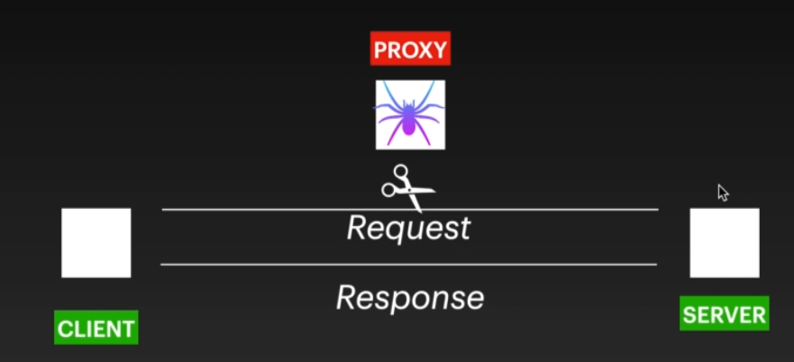

Burp Suit
- It's a proxy tool
- It intersepts Request and Response made to server or client
How Proxy Works

Setup
Downlaod from : https://portswigger.net/burp/releases/professional-community-2020-5-1
Install it
Tip : How to change the default port of Burp Suit

Configure Firefox

Search http://burp
Install CA Certificate

Import the cerificate to firefox